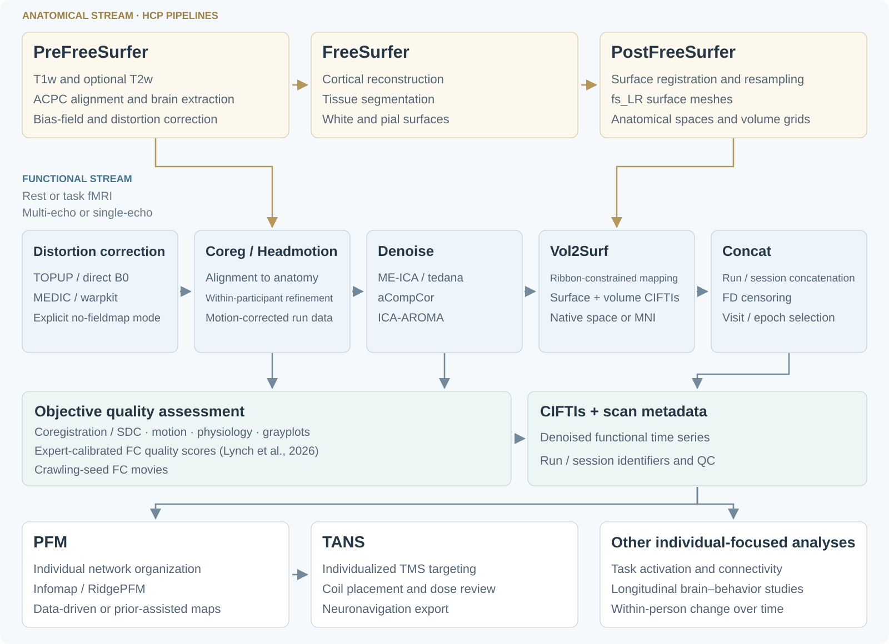

pfm-mefmri
Processing and denoising for individual resting-state and task fMRI, from a single visit to densely sampled longitudinal studies. The workflow supports multi-echo and single-echo data, multiple distortion-correction strategies, careful coregistration to anatomy, and consistent within-participant alignment over time. Quality control connects anatomical alignment, motion and physiology, expert-calibrated FC quality scores (Lynch et al., 2026), and crawling-seed FC movies. Optional modules add precision functional mapping and individualized TMS targeting with TANS.

Explore the workflow
| Section | What you will find |
|---|---|
| Data organization | Expected inputs, validate checks, and example rest/Motor/WorkingMemory outputs. |
| Processing and setup | Distortion correction, denoising, anatomy, longitudinal alignment, and CIFTI outputs. |
| Within-subject longitudinal alignment | Full-sequence comparison followed by focused examples of alignment within the same participant across scans and sessions. |
| Individual network maps | RidgePFM WTA and softmax views across network taxonomies; conventional Infomap is also supported. |
| RidgePFM parameters | Interactive ME01 maps followed by reliability–individuality trade-offs and practical guidance. |
| Quality-control gallery | Motion and physiology, expert-calibrated FC quality scores, crawling-seed FC movies, alignment, and signal QC. |
| Individualized TMS | Basic workflow, coil-search movie, and optional TANS module setup. |
Within-subject longitudinal alignment
Review alignment across scans and sessions. Both approaches align well to anatomy; within-subject refinement adds subtle fine-tuning to dampen occasional placement shifts over time. This attention to within-person consistency is a central design priority of the pipeline.
Precision Functional Mapping (PFM)
RidgePFM combines individual functional connectivity with canonical network templates and spatial priors whose influence you can weight and explore. It is a work in progress. A conventional Infomap workflow is also supported as an option.
Open the network-map selector: choose Lynch2024, Du2024, Hermosillo2024, or Kong2019, then WTA labels or any network’s full-data softmax map. Check Areal parcellation to view parcels derived from that taxonomy’s network map and individual FC. Parcel fills show the majority network identity or mean softmax support; borders follow the selected taxonomy’s parcels. With the option off, network borders remain visible on softmax maps. Low–High colors show relative network support. Download the HTML and open it in a browser.
Explore λ and spatial-prior effects, then view the trade-off charts · Mapping outputs · Sampling across visits.
Data organization
Expected inputs and example processed outputs for a participant with resting-state, Motor, and WorkingMemory scans across sessions and runs, including the naming and metadata checked by validate.
Get started
- Install the dependencies.
- Adapt the study configuration.
- Import your data, then run:
bash /path/to/pfm-mefmri/bin/mefmri_pipeline.sh \
/data/MyStudy/SUB001 /data/MyStudy/config/mefmri.shQuick start · Workflow stages · Output locations · All guides.
Research software. Review participant data quality and modeled outputs before use; participant-derived figures require permission before public distribution.